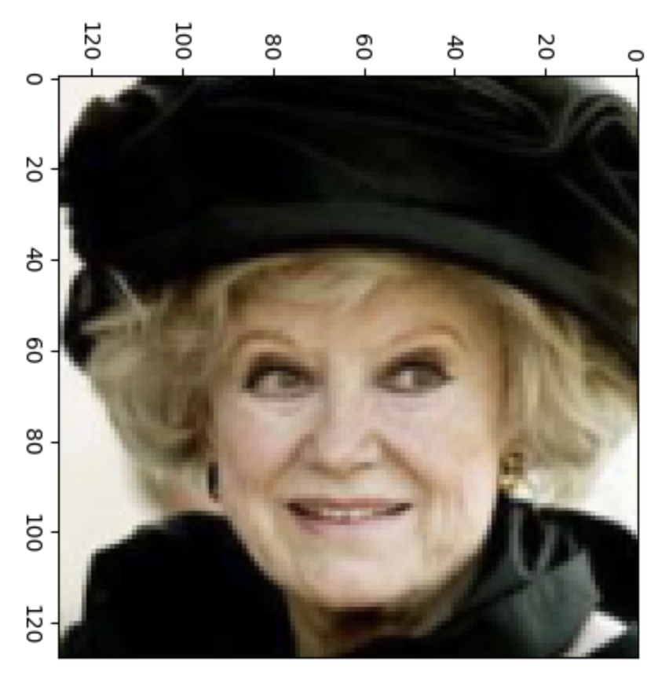
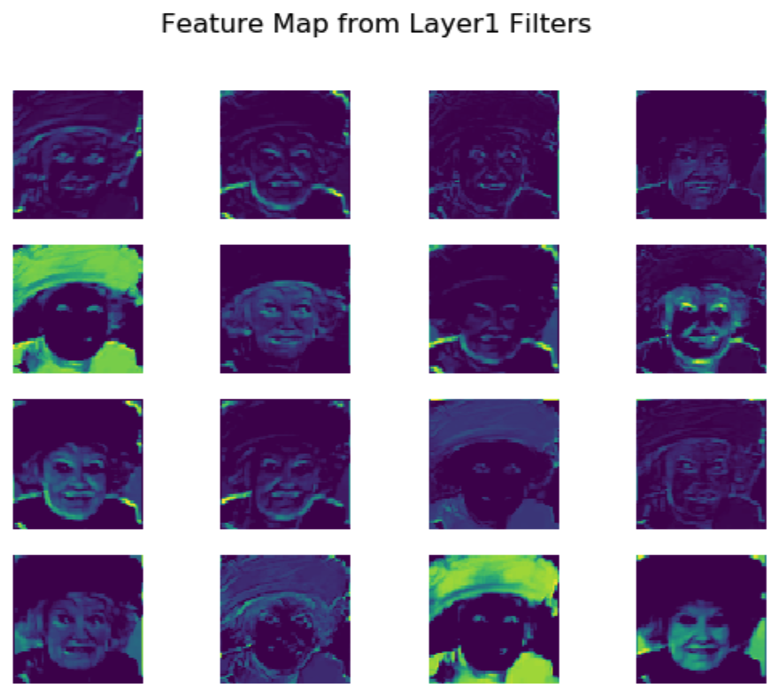

Convolutional Neural Networks
Selected topics in Deep Learning
in 6 hours or less
by Sergey Plis
History of CNNs
Cat's brain 1962 (Hubel and Wiesel)
Fukushima's Neurocognitron 1979

Time Delay Neural Network 1989

CNN 1989

CNN 1998

CNN+GPU+MaxPooling 2011
AlexNet 2012
CNN: bulding blocks
Convolving a kernel with an image
 \[
\left(
\begin{array}{ccc}
0 & 1 & 2 \\
2 & 2 & 0 \\
0 & 1 & 2 \\
\end{array}
\right)
\]
\[
\left(
\begin{array}{ccc}
0 & 1 & 2 \\
2 & 2 & 0 \\
0 & 1 & 2 \\
\end{array}
\right)
\]

Convolving a kernel with an image
Padding and symmetries
Padding and symmetries
How do the channels look?


Pooling: maxpooling
Pooling: maxpooling

Pooling: average
How do we produce a class prediction?
One-convolution

Upconvolution

Dilated convolution
Play with a simulator
Video
Demo
GitHub
Basic building blocks
- Convolution with a filter
- Zero Padding
- Channels and channel-kernel relationship
- Pooling (max and average)
- Moving from convolution layers to predictions
- One convolution
- Upconvolution
- Dilated convolution
Skip connections
Dark knowledge
Highway networks (May 2015 on arxiv)
-
$$
\vec{y} = H(\vec{x}, \bm{W}_H)
$$
-
$$
\vec{y} = H(\vec{x}, \bm{W}_H) \odot T(\vec{x}, \bm{W}_T) + \vec{x} \odot C(\vec{x}, \bm{W}_C)
$$
-
$$
\vec{y} = H(\vec{x}, \bm{W}_H) \odot T(\vec{x}, \bm{W}_T) + \vec{x} \odot (1 - T(\vec{x}, \bm{W}_T))
$$
-
$$
\vec{y} =
\left\{
\begin{array}{ll}
\vec{x} & \mbox{if }\;\;T(\vec{x}, \bm{W}_T)=0,\\
H(\vec{x}, \bm{W}_H) & \mbox{if }\;\;T(\vec{x}, \bm{W}_T)=1
\end{array}
\right.
$$
- What if untrained gate is always open and does not let gradients flow?
- Initialize gate biases to large negative values!

Residual Networks (block)

Residual Networks (full)

Residual Networks (performance)
Error surface effect of skip connection
Dense Networks (architecture)
Dense Networks (effect)
Take Away Concepts
- Skip connections
- Gates
Fully convolutional networks
The task of Semantic segmentation
Semantic segmentation task
Replacing feed forward with convolutional

Fully Convolutional Model (2014)

Examples
Take Away Point
- When target and input have the same dimension it may be better to use convolution everywhere.
Semantic segmentation with twists
deep learning standard: U-net

deep learning standard: U-net

comparison on the brain segmentation task

state of the art: freesurfer

Meshnet


- Gray and White matter
- FreeSurfer for ground truth
- T1 MRIs from HCP
- GitHub
https://github.com/Entodi/MeshNet
Meshnet

- 72516 vs. 23523355
- 600kb vs. 2Gb
Meshnet

Meshnet

(often) better than the teacher

multimodal is straightforward

better than the human (sometimes)

better than U-net

Give us on
(even more) "Advanced" uses of CNN
Masked Convolutions
PixelCNNs
Wavenet: $\ge$16kHz audio

Wavenet: sample by sample

Wavenet: conditioned on text
| Model | "The blue lagoon..." |
|---|---|
| Parametric | |
| Concatenative | |
| Wavenet |
| Model | "English poetry and ..." |
|---|---|
| Parametric | |
| Concatenative | |
| Wavenet |
Deformable Convolutions
Deformable Convolutions
Take Away Points
- Masked convolution
- Pixel based generation
- Deformable convolution (can be rotation invariant)